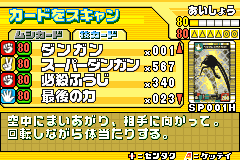

Kouchuu Ouja Mushiking - Greatest Champion e no Michi (Japan)
Battery Save Save Format Spec gbakit Built-In Debug Menu Patch 💾 MultiBoot 🎮 4P Link
Cartridge Identity
- Game Code
BK6J(FamilyBK6)- Header Title
MUSHIKING GC- Maker / Revision
8P/ rev0- ROM Size
- 32.0 MiB (33,554,432 B)
- Save Media
None / Unknown- SHA-256
44e5793ffd95dd1701e67b1401816637e7aeef8982d352d9c5c11dc6897d5853- Engine / SDK Group
comm-001(196 families)
Screenshots


Debug Menu Re-Enablement Patch (.ips)
Download BK6J-debug.ips (15 B IPS / 2 B delta)
- Hook Mechanism
thumb_imm_task_override· Patch initial task spawn at 0x0800033a (movs r0, #21 -> movs r0, #6) to spawn debug menu process- IPS SHA-256
55f9de0371d1d29af1547ec3a4b79d528921c5706e49e39961e55a5cbff16efd
gbakit patch apply BK6J-debug.ips original.gba patched-debug.gba

Link Cable & Multiplayer Communications
This title contains detected communication capabilities: 💾 MultiBoot 🎮 4P Link.
Detailed protocol specifications, SIO registers, Joybus commands, and MultiBoot sequences are documented in the Link & Multiplayer Reference.
- Multi-Player SIO (4P)
- 16-bit ring network · SIOCNT (
0x04000128) literals:0x002238,0x00227c,0x0024d0· SIODATA32/SIOMULTI0 (0x04000120) literals:0x0025e8 - Single-Cart MultiBoot
- Single-Cartridge MultiBoot (Download Play) client/server handler · Thumb SWI 0x25 (
0xDF25):0x5138ac,0x51fcc0,0x557932,0x566088· ARM SWI 0x25 (0xEF000025):0x819a24
Battery Save Format Specification
Open Full Save Format SpecDownload Sample .sav (32,768 B)Download save-format.json
- Specification Coverage
- 7 mapped fields · 0 verified checksum(s) · Confidence: LOW
- gbakit Built-In Support
- Built-in (BK6J)
gbakit save verify BK6J save.sav
gbakit save decode BK6J save.sav
gbakit save fix BK6J damaged.sav -o repaired.savROM Assets, Compression & Audio
- BIOS Compression
- LZ77 (
0x10): 12,824 streams · RLE (0x30): 0 streams - ROM Pointer Tables
- 1,377 tables (6 pointing to validated compressed streams)
- SDK Backup Tags
SRAM_V113
Text, Fonts & Scene Data
- Primary Text Encoding
- Plain ASCII (uncompressed) (
177ASCII strings ·200Shift-JIS runs) - Font & VWF Indicators
- VWF Width Table 1bpp Font · BIOS SWIs: BitUnPack
0x10:1· LZ770x11/12:0· Huffman0x13:0· RLE0x14/15:1 - Scene & Packaging
218ROM pointer tables (≥32 entries,69≥200) ·5relativeu32TOCs ·183OAM metasprite hits
Password System
- Save Media
- Battery-Backed (SRAM)
- Password Class
- Static Password Lookup Table (
static_password_table) - Static Table(s)
0x381a7c
Hardware MMIO Subsystems
ppu_display0x8001cb0,0x8004cf0,0x8005390